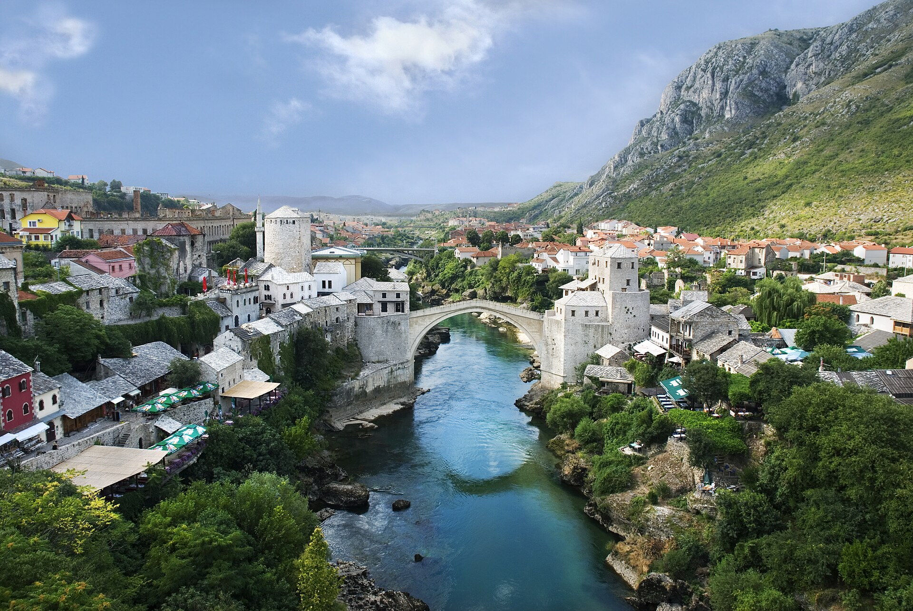
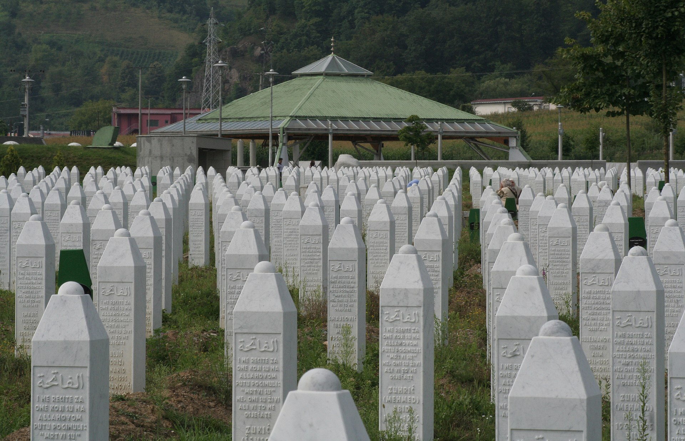
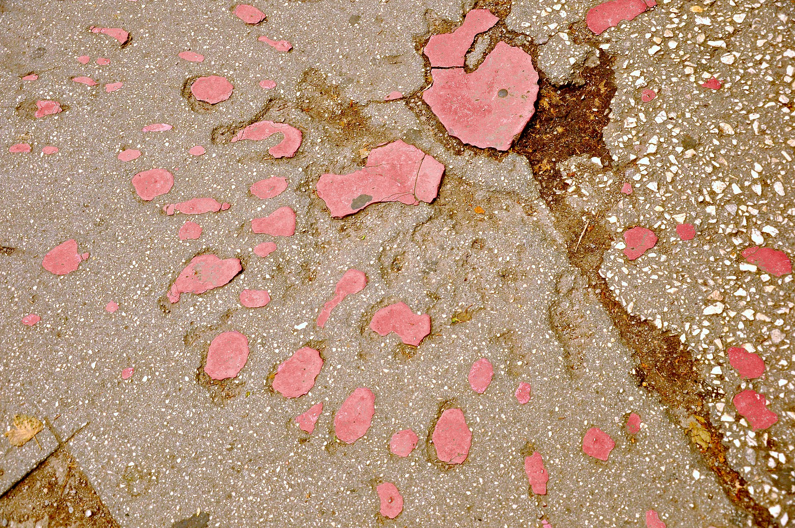

一九九五年七月十一日，波士尼亞東部小鎮斯雷布雷尼察（Srebrenica）陷落。聯合國曾宣告這裡是「安全區」，但荷蘭維和部隊眼睜睜看著塞族共和國軍隊將超過八千名波士尼亞穆斯林男性與男孩帶走，隨後在數天之內系統性地處決他們。四個月後，一九九五年十一月二十一日，在美國俄亥俄州岱頓（Dayton）的萊特—帕特森空軍基地，波赫總統伊澤特貝戈維奇（Alija Izetbegović）、塞爾維亞總統米洛塞維奇（Slobodan Milošević）與克羅埃西亞總統圖季曼（Franjo Tuđman）草簽了《岱頓和平協議》（Dayton Peace Agreement），結束了三年半的波士尼亞戰爭。這一年，波赫經歷了二戰以來歐洲最慘烈的種族滅絕，也迎來了一紙定義其未來三十年國家形態的和平協議。

波士尼亞與赫塞哥維納 (以下簡稱波赫)，地處巴爾幹半島西部，千年來一直是文明板塊的碰撞地帶，東西羅馬帝國的分界線穿過這裡，鄂圖曼帝國與哈布斯堡王朝在此角力，東正教、天主教與伊斯蘭教在這片土地上交織共生。這種多元性既是波赫的文化財富，也是其政治脆弱性的根源。
對於波赫來說重要的年份，1914年的槍聲震動全球，1992年的獨立宣言引爆內戰。但唯有1995年，同時濃縮了這個國家最黑暗的深淵與最關鍵的轉折。以下從三個面向闡述選擇這一年份的理由。
1995年七月，波士尼亞塞族軍隊在拉特科・姆拉迪奇（Ratko Mladić）將軍指揮下攻入聯合國安全區斯雷布雷尼察 (Srebrenica)，將超過八千名波斯尼亞克（Bosniak）男性與男孩系統性屠殺，另有兩萬五千名婦孺被強制驅逐。前聯合國秘書長安南（Kofi Annan）後來承認，這場悲劇暴露了國際社會在面對暴行時的集體失能。國際刑事法庭（ICTY）與國際法院（ICJ）先後裁定此事件構成「種族滅絕」，至今已有五十四人被定罪。斯雷布雷尼察不僅是波赫國家記憶的核心傷痕，更深刻重塑了國際社會對「保護責任」（R2P）的理解。2024年，聯合國大會正式將每年七月十一日定為「斯雷布雷尼察種族滅絕反思與紀念國際日」。

斯雷布雷尼察的震撼與北約隨後的軍事介入，終於迫使各方走上談判桌。1995年十一月在美國岱頓經過二十一天密集談判後達成的和平協議，結束了造成約十萬人死亡、兩百萬人流離失所的戰爭。然而，這份協議也創造了一套極其複雜的政治架構，波赫被分為兩個「實體」（entity），配備十三個政府、十三位總理、一百三十六個部會級機構，以及一套基於民族配額的三人輪值總統制。學者Richard Caplan在其2000年發表於《Diplomacy & Statecraft》的論文中指出，岱頓協議雖然成功止戰，卻在結構上存在嚴重弱點，將族群清洗的結果制度化。三十年來，波赫一直在岱頓體制的框架內掙扎，它既是和平的保障，也是政治癱瘓的根源。
1995年標誌著國際社會對巴爾幹危機的態度發生根本性轉變。在此之前，聯合國維和行動以消極中立為原則，結果是眼睜睜看著「安全區」淪陷。斯雷布雷尼察的教訓直接促使北約從維和轉向強制和平（peace enforcement），八月至九月發動的蓄意武力行動對塞族軍事目標進行大規模空襲，從根本上改變了戰場態勢。這一轉變不僅結束了波赫戰爭，更為日後科索沃（1999年）乃至利比亞（2011年）的國際軍事干預提供了先例。波赫的1995年，實質上重新定義了冷戰後國際社會面對人道危機時的行為準則。
以下五則報導與聲明，分別從不同時間點回望或記錄了這一年的重大事件。
人權觀察組織（Human Rights Watch）於1995年10月發布題為〈The Fall of Srebrenica and the Failure of UN Peacekeeping〉的調查報告，根據其代表在七月底至八月底的實地調查，詳細記錄了塞族部隊進入安全區後對平民進行系統性處決、毆打、強暴及強制驅逐的暴行。報告直指聯合國維和體系的結構性失敗，並呼籲國際社會追究指揮鏈上各層級的責任。這份報告是最早系統揭露斯雷布雷尼察真相的重要文獻之一。
來源：Human Rights Watch, "Bosnia-Hercegovina: The Fall of Srebrenica and the Failure of UN Peacekeeping," October 15, 1995. https://www.hrw.org/report/1995/10/15/...
2025年七月十一日，PBS News 報導了數千人從波赫各地及世界各國聚集斯雷布雷尼察，紀念大屠殺三十週年的場景。「雪布尼察母親」協會主席穆尼拉・蘇巴希奇（Munira Subašić）在紀念儀式上呼籲歐洲「醒來」，指出當年她失去了丈夫、幼子及超過二十名親人。報導也提及，塞族共和國與塞爾維亞至今仍拒絕承認斯雷布雷尼察事件構成種族滅絕。
來源：PBS NewsHour / AP, "Thousands gather in Srebrenica on 30th anniversary of Europe's only acknowledged genocide since WWII," July 11, 2025. https://www.pbs.org/newshour/...
在三十週年前夕，國際特赦組織（Amnesty International）發表聲明指出，儘管國際法院已明確裁定斯雷布雷尼察構成種族滅絕，但該地區高級官員持續否認罪行並美化戰犯的行為，對受害者家屬造成深重的二次傷害。聲明強調，否認種族滅絕不僅是對受害者的侮辱，更是對國際法院判決的公然否定。
來源：Amnesty International, "Bosnia and Herzegovina: 30th anniversary of Srebrenica massacre 'a painful reminder from history'," July 10, 2025. https://www.amnesty.org/...
學者 Adis Maksić 在《The Conversation》撰文回顧岱頓協議三十年，指出這份協議雖然成功阻止了戰爭復發，並使超過一百萬人得以行使返鄉權利，但「少數族群返鄉」（minority returns）的成效極為有限——許多返鄉者最終選擇出售老家房產，搬到同族群聚居的區域。跨族群信任在戰爭中被徹底摧毀，岱頓體制下的政治僵局又不斷加深這道裂痕。作者形容岱頓是一個「不漂亮但也不算最糟」的和平協議。
來源：Adis Maksić, "The Dayton Peace Accords at 30: An ugly peace that has prevented a return to war over Bosnia," The Conversation, November 19, 2025. https://theconversation.com/...
2022年12月15日，歐洲理事會一致通過授予波赫歐盟候選國地位。歐盟外交代表波瑞爾（Josep Borrell）表示，這是向波赫人民傳遞的訊號，他們的未來在歐盟之中。然而，歐盟執委會同時列出十四項關鍵優先改革，涵蓋司法獨立、反貪腐、媒體自由等領域。三十年前岱頓協議所建立的族群配額制度，恰恰是這些改革最大的結構性障礙。候選國地位的象徵意義遠大於實質進展，但它至少說明了一件事：1995年所奠定的政治框架，至今仍然是波赫前行的起點與瓶頸。
來源：EEAS, "EU Candidate Status for Bosnia and Herzegovina: a message to the people and a tasking for politicians," December 2022. https://www.eeas.europa.eu/...
2025年七月，當數千人再次聚集在斯雷布雷尼察的白色墓碑群中，波赫仍然是一個被1995年定義的國家。岱頓協議構建的雙實體結構運轉了三十年，既阻止了戰爭重燃，也阻礙了國家的有效治理。歐盟候選國地位帶來了希望，但十四項改革條件中的每一項，都直指岱頓體制的核心矛盾——一個建立在族群分權基礎上的國家，如何走向公民權利的平等？
學者 Roberto Belloni 與 Aleksandar Zdeb 在2025年出版的研究中提出了「非自由式協合民主」（illiberal consociationalism）的概念，指出岱頓體制不僅固化了族群界線，更在實踐中侵蝕了不屬於三個「建構民族」之個人的基本權利。波赫的困境，從來不僅僅是「戰後重建」的技術問題，而是關於一個深度分裂社會能否在不忘卻歷史的前提下，找到共同前行之路的根本追問。
1995年給波赫留下了兩份遺產：一份是刻在斯雷布雷尼察六千餘座白色墓碑上的記憶，另一份是寫在岱頓協議附件四中的憲法。它們共同構成了這個國家的底色——在悲劇與妥協之間，在記憶與前行之間，波赫至今仍在尋找自己的路。

這份報告的寫作過程中，自己根據課程的作業說明，以 AI 作為研究助手，用它搜索文獻、比對事件時間線、確認引用出處。但我也深刻意識到，AI 助手有可能成為劣質報導的幫兇。舉其中的一個例子，當我最初詢問「波赫最重要的年份」時，AI 幾乎是條件反射式地推薦了1995年，這當然是合理的答案，但如果記者不加思索地接受，就會錯失一個關鍵的追問機會：「重要」對誰而言？對波斯尼亞克社群來說，1995年是倖存與被滅絕之間的分水嶺；但對塞族共和國的政治菁英而言，岱頓反而是他們確保實體自治的勝利。
同樣值得警惕的是 AI 在處理敏感歷史議題時的「兩面討好」傾向。當我請求分析岱頓協議的功過時，AI 傾向於給出一個均衡的「既有成就也有不足」的答案。這種均衡在學術語境中或許恰當，但在新聞報導中可能構成一種道德模糊—，當我們談論八千人被系統性屠殺，「均衡」或是本身就是一種立場的缺席。
此外，AI 提供的引用資訊也需要人工逐一驗證。在本文的撰寫過程中，需要針對每一則新聞與每一篇學術論文都進行了出處確認，包括期刊名稱、卷期號碼、作者資訊和可訪問的網址。之前自己在網路看過一個很有趣的影片，是一群矽谷的工程師在討論有關於未來是否還會有 software engineer 的問題，而現今我覺得最好的答案是「會；只是需求會大幅減少，且他們的工作會從寫 code 變成審查 AI 寫出來的 code，並且對此負責」，延伸至其他領域，亦是如此，AI 的高生產力對於人類工作的 workflow 帶來了巨大的轉變，但 AI 不是自然人，他沒辦法替自己的產出負責，而這個責任最終就會轉向使用 AI 的我們。
[1] Caplan, R. (2000). Assessing the Dayton Accord: The Structural Weaknesses of the General Framework Agreement for Peace in Bosnia and Herzegovina. Diplomacy & Statecraft, 11(2), 213–232. https://doi.org/10.1080/09592290008406163
[2] Belloni, R. & Zdeb, A. (2025). Consociationalism in Bosnia-Herzegovina: How to Build an Illiberal State. In Preljević, H. et al. (Eds.), Shifting Paradigms. Palgrave Macmillan. https://doi.org/10.1007/978-3-031-94370-6_2
[3] Keil, S. & Hulsey, J. (2026). Dayton at 30: Unpacking the Politics of Power-Sharing. Nationalism and Ethnic Politics [Special Issue]. https://doi.org/10.1080/13537113.2026.2622180
[4] Bieber, F. (2017). Imposed Consociationalism: External Intervention and Power Sharing in Bosnia and Herzegovina. Peacebuilding, 5(1). https://doi.org/10.1080/21647259.2016.1264918
[5] Gordy, E. (2022). The Dayton Peace Agreement in Bosnia and Herzegovina and Lessons for the Design of Political Institutions for a United Ireland. Études Irlandaises, 47(1), 1–24. Project MUSE. https://muse.jhu.edu/article/846816
[6] Human Rights Watch (1995, October 15). Bosnia-Hercegovina: The Fall of Srebrenica and the Failure of UN Peacekeeping. https://www.hrw.org/report/1995/10/15/...
[7] PBS NewsHour / AP (2025, July 11). Thousands gather in Srebrenica on 30th anniversary. https://www.pbs.org/newshour/...
[8] Amnesty International (2025, July 10). Bosnia and Herzegovina: 30th anniversary of Srebrenica massacre. https://www.amnesty.org/...
[9] Maksić, A. (2025, November 19). The Dayton Peace Accords at 30: An ugly peace that has prevented a return to war over Bosnia. The Conversation. https://theconversation.com/...
[10] EEAS (2022, December). EU Candidate Status for Bosnia and Herzegovina. https://www.eeas.europa.eu/...
[11] United Nations. About the 1995 Genocide in Srebrenica. https://www.un.org/...
[12] Chollet, D. (2005). The Road to the Dayton Accords: A Study of American Statecraft. New York: Palgrave Macmillan.
[13] International Crisis Group (1999). Is Dayton Failing?: Bosnia Four Years After the Peace Agreement. https://www.refworld.org/...